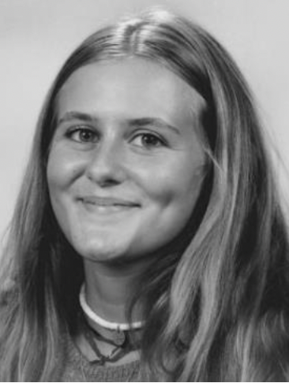

Bonjour ! Je m'appelle Jeanne Taillan, j'ai 18 ans, et je suis en première année au BBA de l'ESSEC
Pendant mon temps libre, j'aime aller voir des expositions, passer du temps avec mes amis, et quand j'ai plus de temps j'aime partir faire des randonnées avec mon sac à dos !
Cela fait près de 2 ans que la randonnée est ma passion. Tout a commencé l'été de la première. Alors que l'on réfléchissait à une destination de vacances, mes amis et moi avons eu l'idée de partir marcher. Nous sommes donc partis en Auvergne pendant 10 jours pour suivre le GR 30. C'était une expérience tellement nouvelle et enrichissante que nous sommes repartis l'été dernier en Espagne. Nous avons longé la Costa Brava pendant une semaine, toujours avec nos sacs à dos et nos tentes !
A la suite d'un stage au Centre Pompidou, j'ai développé une vraie passion pour l'art. L'art a toujours eu une place importante dans ma vie. Quand j'étais plus jeune, ma mère m'emmenait voir une exposition chaque mercredi ! Aujourd'hui, j'ai gardé cette habitude d'aller voir des expositions dès que j'ai un moment libre !